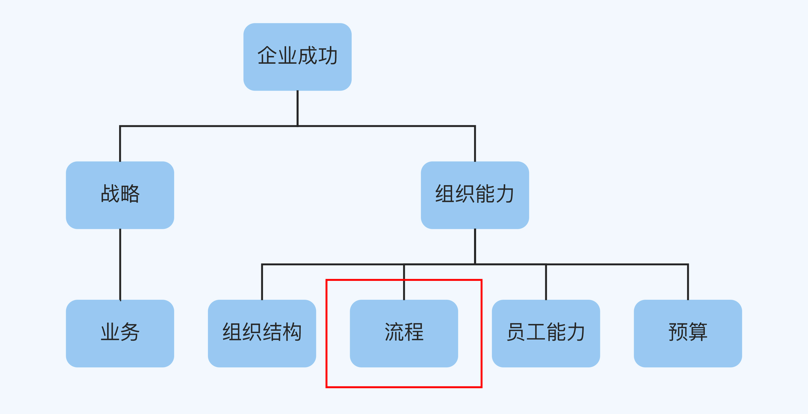
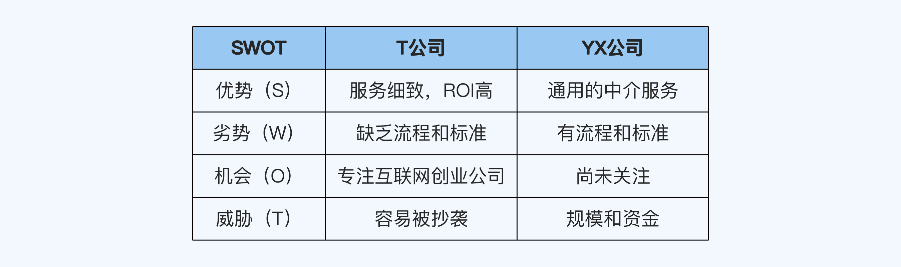
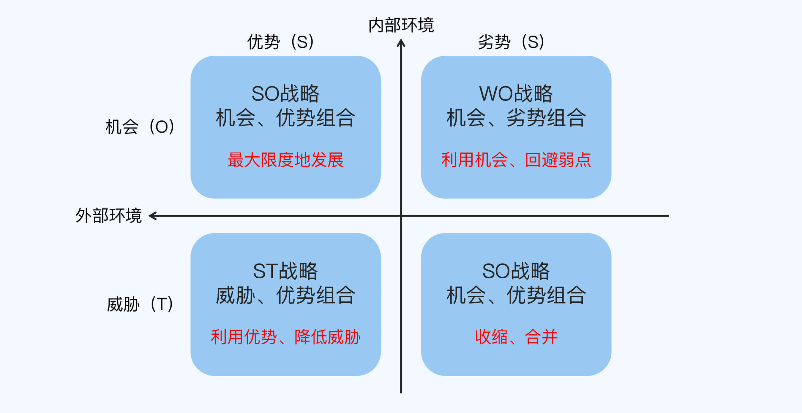
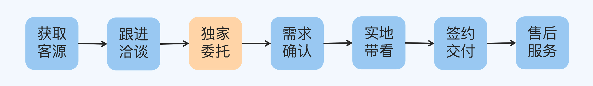

- 00 开篇词 为什么每个人都应该学会复盘？.md.html
- 01 CLAP模型：一个优秀的复盘模型是什么样的？.md.html
- 02 OPTM框架：怎么使用CLAP模型？.md.html
- 03 教练技术：怎么做复盘才能化解冲突？.md.html
- 04 制度和文化：怎么营造复盘环境？.md.html
- 05 三角法：怎么组建复盘团队？.md.html
- 06 MECE原则：怎么准备复盘资料？.md.html
- 07 五步法：如何召开一次高效的复盘会议？.md.html
- 08 事实比较：如何快速比较目标与结果？.md.html
- 09 分析原因：梳理逻辑时怎样找到切入点？.md.html
- 10 洞察规律：怎样更新认知才能找准发力点？.md.html
- 11 OKR：怎样根据复盘结论制定计划？.md.html
- 12 Double Check：怎么检查评估一次复盘的效果？.md.html
- 13 案例导学：我是怎么帮助企业做复盘的？.md.html
- 14 战略升级：5年增长100倍的跨境电商做对了什么？.md.html
- 15 业务关键点：改进一个点业绩增长50%？.md.html
- 16 组织结构设计：变动一个职位，就能带来100万_月的增量吗？.md.html
- 17 高效赋能：怎么建立流程才能把人效提升3倍？.md.html
- 18 人才培养：怎么把人才转化成实际生产力？.md.html
- 19 预算制定：人头和财务预算到底怎么定？.md.html
- 春节荐书（一）《原则》：在不确定中找到确定.md.html
- 春节荐书（二）《人类简史》：故事的力量.md.html
- 结束语 复盘，见天地见众生见自己.md.html
- 捐赠
17 高效赋能：怎么建立流程才能把人效提升3倍？
你好，我是张鹏！
在前三讲中，我分享了战略、业务、组织结构方面的复盘案例。这些都属于宏观显化的调整，我们的感受比较直观。比如战略的变化会体现在内部方向上，业务的改进会直接反映在生产销售上，组织结构的变化也非常明显。

而在接下来的三讲中，我会分享流程、员工能力和预算的案例。它们属于微观内化的调整，带给人的日常感知可能没那么强烈，但同样能取得非常好的效果，适合战略、业务和组织结构短期不需要变化，或者不能变化的企业。
今天，我们就从通过优化流程把人效提升了3倍的T公司说起。
案例背景：缺乏竞争优势
T公司位于北京，是一家以新兴互联网企业为客群的创新型办公选址服务公司。创始人小Y是SOHO中国的TOP 3 sales，也是和我认识多年的朋友。
小Y创业的时候有两个选择：
- 做一家未来能够规模化的选址顾问公司，长期的愿景是成为像戴德梁行（Cushman & Wakefield）或者第一太平戴维斯（Savills）这样的综合物业管理公司。
- 成为一个利润率很高但是规模不大的个人选址工作室。
小Y的选择是前者，她的说法让我印象非常深刻：“中国需要一家有世界影响力的专业机构。”
办公选址行业的业务模型并不复杂，是一个典型的撮合平台。一边是企业客户的选址需求，一边是写字楼的供给，而选址公司的重点就是撮合它们。
T公司的早期客户，95%以上都是小Y自己的个人客源，而且除了小Y，其他员工暂时还不具备开发新客源的能力。虽然公司成立了市场部、销售部和房源部等部门，但是大家的联动性不强。
办公室选址这个业务，对于企业来说是刚需。尤其是对于高科技行业来说，场租在成本项中的占比还是比较大的，一旦预测到团队规模即将发生变化，公司的行政主管第一时间就会想到要调整办公空间的大小。
但是，由于市场上提供办公室选址服务的竞争对手有很多（写字楼租赁中介），T公司一开始除了朋友信任和熟客推荐，并没有什么特别的优势。而且小Y还特别强调一点，她不愿意打折，因为这会显得自己的服务价值感不高。
那么问题来了，从客户端来看，知名度不高、同质化严重、还不愿意降价；从企业内部来看，部门之间联动性不强、员工的个人能力也不够，T公司要怎么才能在竞争中脱颖而出，快速占领市场呢？
复盘详解
基于刚才介绍的情况，我们决定做一次深度复盘，一起探索在不改战略、不改业务模型、不改组织结构的前提下，能否找到制胜之道。
对比
在对比环节，可以自己和自己比，也可以自己和竞争对手比。对比能看出差异，差异能让人看到价值点所在。
由于T公司没有太多的历史数据积累，我们选择对标同行进行对比，用对方做到的当目标，用我方做到的当结果。
因为没有具体的营销策略和特色的产品，也没有渠道和价格等方面的优势，这一次，我并没有用4P理论做精细化比较，而是使用了颗粒度更粗的SWOT理论。
我们选定了在同行中做得比较好的YX公司作为标的，比较如下：
- 优势（S）
T公司最大的优势在于小Y的专业度够高，她在帮助客户选址的时候，能够结合客户的业务和业态，考虑得足够周全，提升客户的ROI。
除了客户能想到的写字楼面积、价格和免租期之外，小Y考虑的事情还包括：
- 楼宇广告的折扣。
- 写字楼周边的配套设施给客户的员工带来的便利性。
- 楼宇中其他企业是否能和该客户形成协同。
- 客户下一次搬家、扩张或者收缩的后续企业接盘工作。
- 风水。
……
这种服务是包括YX公司在内的绝大多数同行不具备的，所以深得存量客户的认可。
- 劣势（W）
T公司最大的劣势在于团队不够成熟，不但没有太多办法扩大客群，甚至就连现有的几百家客户，也做不到全部提供小Y本人这种水平的服务。
相比之下，YX公司内部的流程和标准能够保证他们对所有客户的服务能基本保持在同样的水平。
- 机会（O）
T公司的机会在于抢占了细分市场的先机，北京的互联网公司这些年一直蓬勃发展，但是当时行业内并没有一家成规模、有品牌的公司专门为互联网创业公司提供选址服务。
YX公司的灵活度不够，还没有专门针对互联网创业公司这一块业务发力。
- 威胁（T）
T公司面临的威胁在于业务门槛并不高，服务性的创新很容易被抄袭模仿，然后被资金更雄厚的竞争对手通过价格战打压，最终丧失生机。
像YX公司这样的竞争对手一旦觉察到这一点，完全可以通过“抄袭-规模-低价”这样粗暴的竞争方式碾压T公司。

逻辑
做完和YX公司的SWOT对比分析之后，经过讨论，我们共同认为应该扬长避短，采取SO战略，利用好互联网创业公司这个细分市场的先机。

所以我们要做的事情是：
- 把小Y一个人的经验复制到整个团队。
- 制定流程和标准，保证对所有的客户能提供同样品质的服务。
- 防止竞争对手抄袭T公司的模式通过低价对T公司形成致命的竞争优势。
T公司当时只有小Y一个人具备前期获取客源、中间跟进客户、后期交付服务的全案能力，而锻炼这种能力需要大量的案例积累经验，无法通过短期培训的方式让其他团队成员迅速掌握。
于是我把选址流程做了拆解，想看看有没有办法在战略不变、组织结构不变的情况下激发整个团队的产值效率。
流程的第一步获取客源，这一步只有小Y能做。
接下来的每一步，包括跟进洽谈、需求确认、实地带看、签约交付以及售后服务，都是可以快速标准化和复制的动作，团队其他成员也可以做。当然，每个人的效率在每个环节点上是不一样的。
在对客户跟进洽谈的过程中，客户非常有可能同时和多家选址公司或者写字楼租赁中介进行接洽，这对T公司是非常不利的，这个环节最好能把控住，才能走到后续的流程。
由于T公司在服务上还是非常有特色的，加上还有之前的客户做背书（T公司的客户主要来自老客户推荐），这一块的客户信任度是非常高的，丢单主要是因为竞争对手一方销售的人为因素导致。
从需求确认环节开始，一直到签约交付，T公司几乎能做到100%的转化率。
我问小Y：“如果能加上一个能确保签约的环节，会不会更好？”
小Y回答：“当然，关键是怎么加呢？”
我说：“在跟进洽谈之后，需求确认之前，只要我们的服务展示让客户相信我们能够服务好他们，并且能够最大限度地为客户着想，争取到最大的利益，客户是不是就可以跟我们签一个独家选址服务委托合同？”
小Y说：“对呀，这样就有排他性了。而且为了让客户利益最大化，我们可以在独家选址服务委托合同上写明，同类的服务优先选择我们，除非我们的竞争者能在明面上提供更有竞争力的条件。”
我深深地为小Y叫好，良性的竞争有利于自己的进步。
认知
修改之后的流程图如下所示，在跟进洽谈和需求确认之间加入了独家委托这个环节。

接下来，我们根据团队中每个人的特点，把他们安排在不同的环节之中，进一步巩固和加强了T公司在互联网企业选址服务这个业务的能力。
当你把一个看似复杂的业务拆分成各个模块的时候，就会发现其实并不需要从头打到尾的超级员工，只要把合适的人放在合适的岗位上，就能发挥出好几倍的效能。
规划
在梳理好整个流程之后，就需要准备接下来的目标和计划了。我们制定了一个总体高于行业三倍人效的目标，并且拆解了这个目标，把任务根据每个人的能力做了分解：
- 小Y主抓获取客源，她的关键结果是当年新增两倍的有效客源。
- 相对有经验的小伙伴，做跟进洽谈、独家委托和需求确认，关键结果是转化率提升50%。
- 新进的小伙伴，做好实地带看和售后服务，保持转化率不变即可。
- 签约交付和售后服务又转移给有经验的小伙伴，保持客户满意度不变或略高即可。
最终结果：3倍人效
在这样的目标和关键结果的的指导下，T公司在加入独家委托这个关键环节的一年之后，在人员不变的情况下取得了超过同比去年自身的业绩3倍的成长，也达成当初制定的目标——3倍行业平均人效。
小结
在这一讲，我通过了一个选址服务公司的案例，为你讲解了通过优化流程为团队高效赋能，从而实现高速增长的过程。现在，我们回顾一下重点：
- 把确定性工作拆分成标准化的流程，能够帮助你观察到颗粒度更细的环节（着力点）。
- 一般来说，转化率不够高或者流程不太顺的环节是需要复盘重点讨论的关键环节。
- 通过SWOT分析找出怎么改变（增加、减少和改变）这些关键环节，让流程更顺畅。
- 最后根据每个环节对能力的不同要求，把任务分配到合适的成员身上。
这样可以把一个复杂的工作拆分成“只有关键节点要求能力高”的流程，从而达到更合理的团队能力配置，即使在整体能力无法快速提升的前提下，依然可以取得可观的增长。
思考题
这就是这一讲的全部内容了，最后留一道思考题给你：
在你参与过的项目中，是否也有类似的情况？你能否运用这一讲学习的方法对这些工作进行流程化拆分，并通过复盘找出关键点，对工作重新进行合理地分配呢？
欢迎你把答案写在留言区，和我一起讨论。
© 2019 - 2023 Liangliang Lee. Powered by gin and hexo-theme-book.